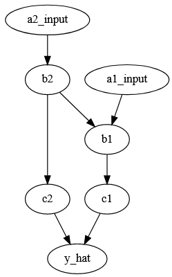
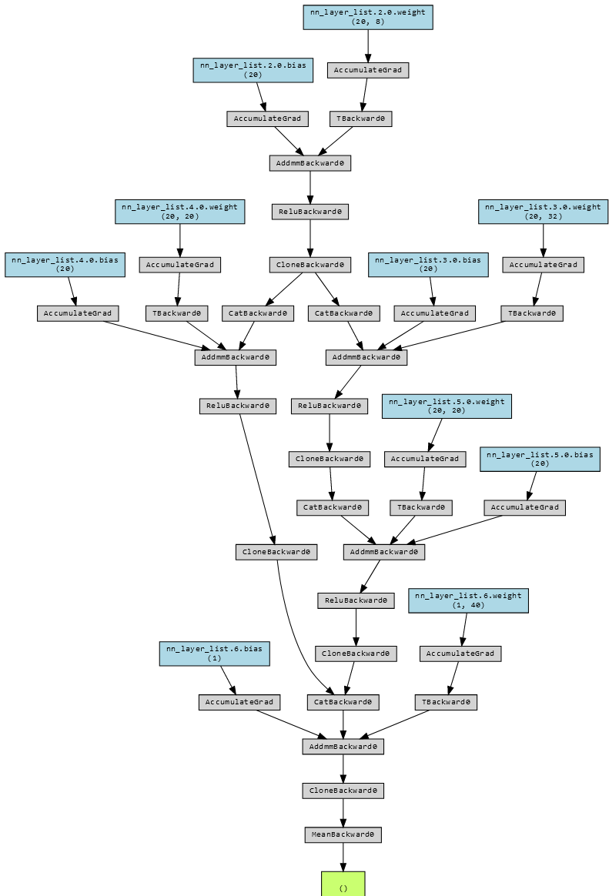
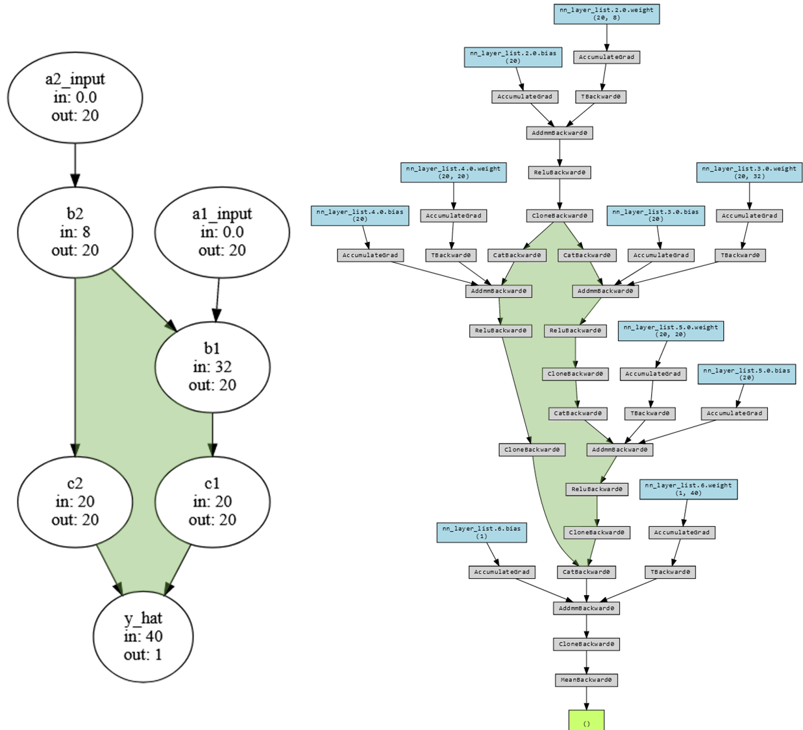
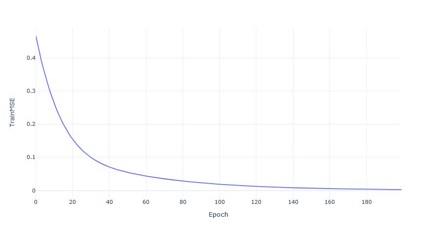

n_obs = 100 # 100 obs for each group
y_true = torch.from_numpy(np.concatenate([
np.zeros((n_obs, )),
np.ones( (n_obs, ))], 0)) + .1* torch.rand(2*n_obs,)
input_tensor_dict = {
'a1_input': torch.from_numpy(np.concatenate([
np.zeros((n_obs, 4, 3)),
np.ones( (n_obs, 4, 3))], 0)),
'a2_input': torch.from_numpy(np.concatenate([
np.zeros((n_obs, 4, 2)),
np.ones( (n_obs, 4, 2))], 0))}
x_list_temp = [input_tensor_dict[key].to(torch.float) for key in input_tensor_dict.keys()]
x_list_temp
# output
# Probability of
[tensor([[[0., 0., 0.], # A
[0., 0., 0.], # C
[0., 0., 0.], # G
[0., 0., 0.]],# T
...,
[[1., 1., 1.],
[1., 1., 1.],
[1., 1., 1.],
[1., 1., 1.]]]),
tensor([[[0., 0.],
[0., 0.],
[0., 0.],
[0., 0.]],
...,
[[1., 1.],
[1., 1.],
[1., 1.],
[1., 1.]]])]Making a “Visible” Neural Network
code
advanced
What’s a visual neural network?
In most neural networks, neurons are not parametric in the same way that linear models are. In a image recognition model there may be neuron which functions to detects edges but when the model is set up initially one can’t point to a neuron and say what it will do or represent. This can make interpreting the weights in a model tricky.
Visible neural networks (VNN) are one way to get around this problem by making the structure of a model reflect the process being modeled. In a VNN, influential sub-components may be interpreted as implicating the process they represent as being important. Within biology VNNs have been used by Ma et al. 2018 and Hilten et al. 2021 working in yeast and humans respectively (in the later mixed performance, seemingly based on trait complexity).
A hypothetical gene network
Before scaling to representing gene networks, I built a simple test case and will walk through it below, with all the necessary code (but some of it hidden1 for brevity).

Here we have a hypothetical network which involves two genes (a1_input, a2_input), variants of which affect some initial processes (b1, b2), which in turn affect a second set of processes (c1, c2). I’ll use these last processes to predict my trait of interest (y_hat).
This is a directed acyclic graph, meaning that processes have an order (the arrows) and there are no loops (c1 doesn’t some how change a1_input). The model I’d like to end up with is a neural network with a structure that mirrors this graph 2 with each node representing one or more layers of neurons.
Beginning with the end in mind, I need a way to specify: 1. The data the graph operates on 1. The process graph and each node’s attributes 1. How to “move” through the graph
1. The data itself
My example trait, \(y\) is either 0 or 1 (plus a little noise). It’s controlled by two genes which are represented as tensor3 containing values for each possible nucleotide (ACGT) for each SNP measured in the gene. Conveniently, both genes either contain all 0’s or all 1’s and when there are only 0’s \(y\) will be around 0 (and the same for 1).
This of course means that in this population no nucleotides (all 0s) were observed or all nucleotides (all 1s) were simultaneously observed. Don’t ask me how this is possible 🤔. For real data these values would be probability of seeing a given nucelotide so “A” might be [1, 0, 0, 0]4.
Then this data can be packaged nicely in a DataLoader5. This will retrieve the trait (y) and SNPs for each gene (in x_list) for 20 observations at a time.
training_dataloader = DataLoader(
ListDataset(
y = y_true[:, None].to(torch.float32), # Set as 32 bit float to match network
x_list = [e.to(torch.float32) for e in x_list_temp]),
batch_size = 20,
shuffle = True)2. Defining the graph
The structure of a graph can be nicely represented as a python dictionary so I’ll begin with that:
node_connections = {
'y_hat':['c1', 'c2'],
'c1':['b1'],
'c2':['b2'],
'b1':['a1_input', 'b2'],
'b2':['a2_input'],
'a1_input': [],
'a2_input': []
}Each node will have an input and output size stored in a dictionary. The output sizes are easy, all nodes will have the same size except for the last node, which has predicts y, which will have a size of 1.
node_list = list(node_connections.keys())
default_output_size = 20
output_size_dict = dict(zip(node_list,
[default_output_size for i in range(len(node_list))]))
output_size_dict['y_hat'] = 1
output_size_dict
# output
{'a1_input': 20,
'a2_input': 20,
'b1': 20,
'b2': 20,
'c1': 20,
'c2': 20,
'y_hat': 1}The input sizes are a little trickier. A node’s input should be the number of SNPs in a gene (if it’s an input node) or the sum of the outputs of the nodes on which it depends (e.g. y_hat’s input size is the sum of c1 and c2’s outputs). To do this, I’m going to copy the dictionary with all the connections between nodes, then swap the node names for their output sizes. Summing the list of these output values will be the required input size. Data nodes don’t depend on input from other nodes, so those will have an input shape of 0.
input_size_dict = node_connections.copy()
no_dependants = [e for e in node_connections.keys() if node_connections[e] == []]
# use the expected output sizes from `output_size_dict` to fill in the non-data sizes
tensor_ndim = len(input_tensor_dict[list(input_tensor_dict.keys())[0]].shape)
for e in tqdm(input_size_dict.keys()):
# overwrite named connections with the output size of those connections
# if the entry is in no_dependants it's data so it's size needs to be grabbed from the input_tensor_dict
input_size_dict[e] = [
(list(input_tensor_dict[ee].shape)[1]*list(input_tensor_dict[ee].shape)[2])
if ee in no_dependants
else output_size_dict[ee] for ee in input_size_dict[e]]
# Now walk over entries and overwrite with the sum of the inputs
for e in tqdm(input_size_dict.keys()):
input_size_dict[e] = np.sum(input_size_dict[e])
input_size_dict
# output
{'y_hat': 40,
'c1': 20,
'c2': 20,
'b1': 32,
'b2': 8,
'a1_input': 0.0,
'a2_input': 0.0}Now we can update the graph from above adding in the input/output sizes.

3. How to move through the graph
To calculate the prediction for an observation each node in the graph needs to be run after all it’s input nodes have been run. Specifically, I need a list of nodes, ordered such that each node comes after all the nodes on which it depends.
This takes little doing. Here I use some custom helper function to find the unique entries in a dictionary, the “top” nodes (those on which no other nodes depend).
# start by finding the top level -- all those keys which are themselves not values
# helper function to get all keys and all value from a dict. Useful for when keys don't have unique values.
def find_uniq_keys_values(input_dict):
all_keys = list(input_dict.keys())
all_values = []
for e in all_keys:
all_values.extend(input_dict[e])
all_values = list(set(all_values))
return({'all_keys': all_keys,
'all_values': all_values})
# find the dependencies for run order from many dependencies to none
# wrapper function to find the nodes that aren't any other nodes dependencies.
def find_top_nodes(all_key_value_dict):
return([e for e in all_key_value_dict['all_keys'] if e not in all_key_value_dict['all_values']])Similar to how I calculated each node’s output size, here I copy the connection dictionary and then manipulate it. I repeatedly identify the top-most nodes in the graph, add them to a list, and then remove them from the dictionary. Repeating this “peels” of the top layer over and over until there are nodes left. The resulting list is ordered from top most to most basal, so reversing it is all that need be done to get the order nodes should be run in.
# find the dependencies for run order from many dependencies to none
temp = node_connections.copy()
dependancy_order = []
# Then iterate
for ith in range(100):
top_nodes = find_top_nodes(all_key_value_dict = find_uniq_keys_values(input_dict = temp))
if top_nodes == []:
break
else:
dependancy_order += top_nodes
# remove nodes from the graph that are at the 'top' level and haven't already been removed
for key in [e for e in dependancy_order if e in temp.keys()]:
temp.pop(key)
# reverse to get the order that the nodes should be called
dependancy_order.reverse()
dependancy_order
# output
['a2_input', 'a1_input', 'b2', 'b1', 'c2', 'c1', 'y_hat']4. Turn the graph into a neural network
So far, we have the data in a useful format (training_dataloader), a description of what the network should look like (node_connections, input_size_dict, output_size_dict), and the order that nodes in the network should be run in (dependancy_order). With this, we can build the network. I’ll start by defining a node as a linear layer (nn.Linear) that is passed into a ReLU. By creating a function6 for making nodes, changing every node in the network is as easy as editing this function.
def Linear_block(in_size, out_size, drop_pr):
block = nn.Sequential(
nn.Linear(in_size, out_size),
nn.ReLU())
return(block) Now, I can go through each node in order of it’s dependencies and have it return the data (if it’s an input node), process inputs with a Linear_block (if it’s not an input node or the output node), or use a linear function to predict the trait7.
# fill in the list in dependency order.
layer_list = []
for key in dependancy_order:
if key in input_tensor_names:
layer_list += [
nn.Flatten()
]
elif key != 'y_hat':
layer_list += [
Linear_block(in_size=example_dict_input_size[key],
out_size=example_dict_output_size[key])
]
else:
layer_list += [
nn.Linear(example_dict_input_size[key],
example_dict_output_size[key])
]Double checking the model structure
Using the lovely library torchviz, we can visualize every computational step in this model.

This is a lot to look at, but if we compare it to the earlier graph we can spot the same loop.

The moment of truth…
Now all that is left is to see if the model trains. Using the objects describing the graph, the names of the input tensors, and the order nodes should be run it I’ll initialze the network, train it for 200 epochs aaaaaannnnddd….
model = NeuralNetwork(example_dict = node_connections,
example_dict_input_size = input_size_dict,
example_dict_output_size = output_size_dict,
input_tensor_names = list(input_tensor_dict.keys()),
dependancy_order = dependancy_order)
model, loss_df = train_nn_yx(
training_dataloader,
training_dataloader, # For demo, the training and testing data are the same.
model,
learning_rate = 1e-3,
batch_size = 20,
epochs = 200
)It works!

Now all that’s left is to scale it up to a full genome and all the connections between the genes in it 😅.
Footnotes
Have a look at the page source.↩︎
This will not be a graph neural network, although they may be effective here.↩︎
A box of numbers that can have multiple dimensions. A matrix is a “rank-2” tensor.↩︎
Technically, with 4 possibilities you only need 3 binary digits where
[0, 0, 0]would be 100% probability of the fourth nucleotide↩︎I’m using a custom
Datasetsubclass. See source for details.↩︎Technically a method since it’s in a class.↩︎
As an aside, the first time I wrote this I had all non-input nodes be Linear_blocks. This resulted in fair bit frusterated debugging as the network would either train perfectly or fail to train depending on how the last ReLU was initialized🤦🏼♂️.↩︎